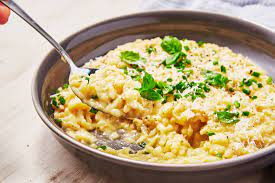

Risotto
Home

Cooking with Babish's Risotto
This is a filler description
Ingredients
1 White Onion (diced)
2 cups Arborio Rice
1/2 cup Dry White Wine
4 cups Chicken Stock
Parmesan Cheese
Salt and Pepper to taste
Chives (garnish)
Directions
Step 1:
Set your pressure cooker to its hottest or "browning setting.
Add one diced White Onion to the pressure cooker and stir, sweating the onions.
Step 2:
Add 2 cups of Arborio Rice to the pressure cooker.
Stir to toast the rice for one minute, or until edges become translucent.
Step 3:
Deglaze with 1/2 cup of White Wine.
Continue to saute until all of the alcohol has cooked off.
Step 4:
Slowly add chicken stock 1/2 cup at a time.
Continue to stir and make sure no rice gets stuck to the sides of the pressure cooker.
Step 5:
Lock the lid on your pressure cooker and cook on high for 5-6 minutes.
Make sure to let steam escape through the quick-release steam valve before opening cooker.
Step 6:
Grate a lot of parmesan (a lot!) into the risotto and season with salt and pepper. Stir.
Step 7:
Serve garnished with more parmesan and chives to your liking.